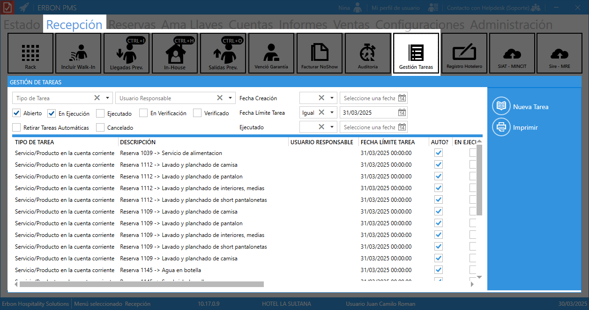
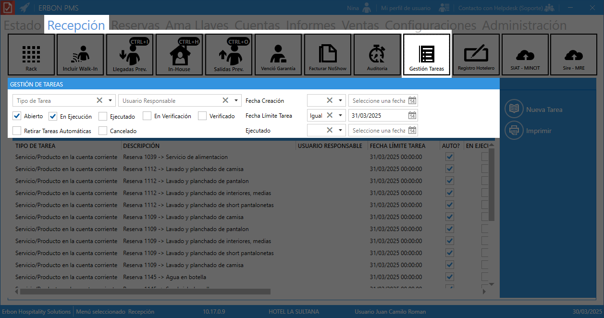
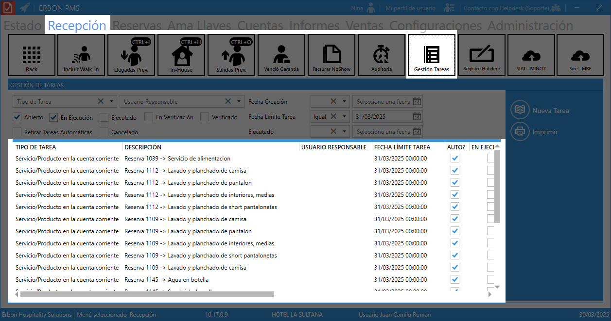
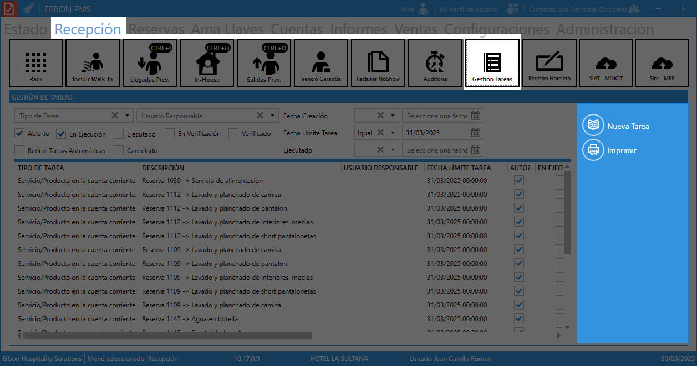

Gestión de tareas¶
Permite administrar y hacer seguimiento a las tareas operativas del hotel. Estas tareas pueden estar relacionadas con:

- Servicios adicionales (ejemplo: room service, limpieza, mantenimiento).
- Seguimiento de procesos (ejemplo: facturación, auditoría, check-in, check-out).
- Asignación de responsabilidades a diferentes empleados.
Filtros y opciones de búsqueda¶
Arriba del listado hay opciones para filtrar tareas por:

Filtros disponibles¶
-
Tipo de Tarea: Permite seleccionar una categoría específica de tarea, se usa para encontrar tareas de una misma categoría.
-
Usuario Responsable: Filtra tareas según el empleado o área asignada, útil para ver qué tareas tiene pendientes un usuario en particular.
-
Fecha de Creación: Permite seleccionar un rango de fechas para ver las tareas creadas en ese período.
-
Fecha Límite de Tarea: Filtra tareas según la fecha límite establecida, útil para ver tareas urgentes o próximas a vencer.
-
Ejecutado: Permite buscar tareas que ya han sido marcadas como completadas.
Filtros de estado de tareas¶
- Abierto: Muestra tareas nuevas que aún no han sido iniciadas.
- En Ejecución: Filtra tareas que están en proceso.
- Ejecutado: Solo muestra tareas que ya han sido completadas.
- En Verificación: Filtra tareas que están esperando ser revisadas antes de cerrarse.
- Verificado: Muestra tareas que ya fueron confirmadas como finalizadas.
- Retirar Tareas Automáticas: Oculta tareas que fueron generadas automáticamente por el sistema.
- Cancelado: Muestra tareas que fueron anuladas o no se completaron.
Explicación de las columnas¶

| Columna | Descripción |
|---|---|
| TIPO DE TAREA | Indica la categoría de la tarea (ejemplo: "Servicio/Producto en la cuenta corriente", "Mantenimiento", "Limpieza"). |
| DESCRIPCIÓN | Detalla la tarea específica a realizar (ejemplo: "Avulsa Restaurante -> Soda", "Filete de corvina"). |
| USUARIO RESPONSABLE | Persona asignada para completar la tarea. |
| FECHA LÍMITE TAREA | Indica hasta cuándo debe completarse la tarea. |
| AUTO? | Si la tarea fue generada automáticamente por el sistema. |
| EN EJECUCIÓN | Indica si la tarea está en proceso. |
| EJECUTADO | Se marca cuando la tarea ha sido completada. |
| EN VERIFICACIÓN | Indica que la tarea ha sido completada, pero está en revisión antes de su cierre definitivo. |
| VERIFICADO | Una vez verificada, se marca como terminada oficialmente. |
| CREADO POR | Usuario que creó la tarea. |
| CREADA EL (FECHA REAL) | Fecha exacta en la que se creó la tarea (según la hora real del sistema). |
| CREADA EL (FECHA SISTEMA) | Fecha registrada en el sistema PMS, que puede ser diferente si hubo algún ajuste de tiempo en la base de datos. |
Acciones disponibles¶

- Nueva Tarea: Permite crear una nueva tarea.
- Imprimir: Genera un reporte con las tareas listadas.
Ejemplo
- El recepcionista registra un pedido de "Room Service" para la habitación 205.
- La tarea se asigna al área de alimentos y bebidas.
- El estado cambia a "En ejecución" cuando el personal empieza a preparar el pedido.
- Una vez entregado al huésped, se marca como "Ejecutado".
- El supervisor revisa y verifica que la tarea fue correctamente realizada.